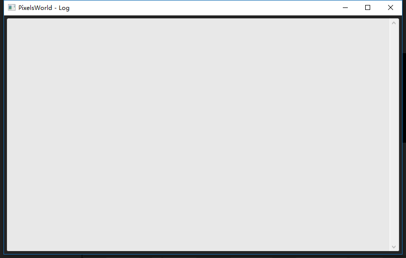
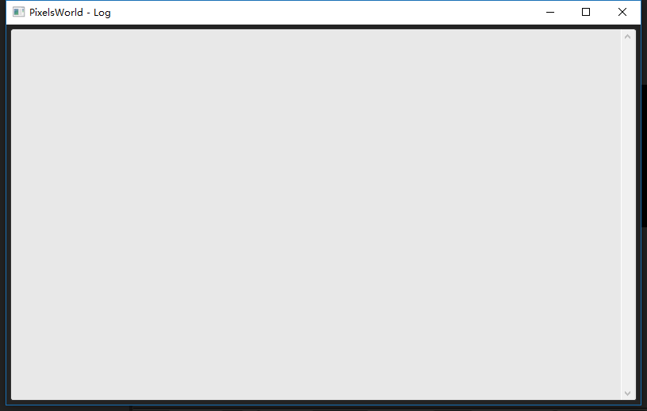

Debug
Open the debug checkbox in the plugin panel.
A debug window will show up. This is where error message will appear.

If you want to print some message here. Please use the Lua (CPU & GPU) language mode.
Open the debug checkbox in the plugin panel.
A debug window will show up. This is where error message will appear.

If you want to print some message here. Please use the Lua (CPU & GPU) language mode.